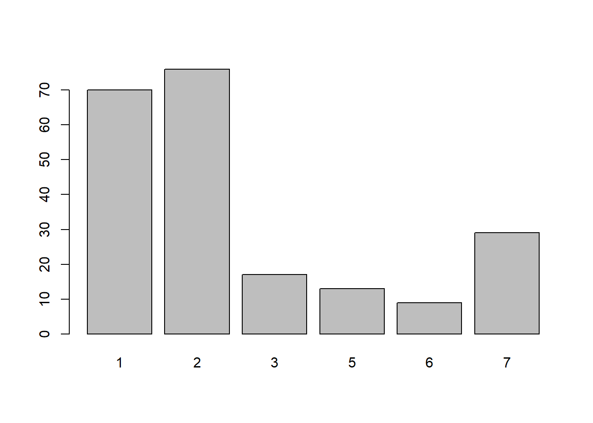
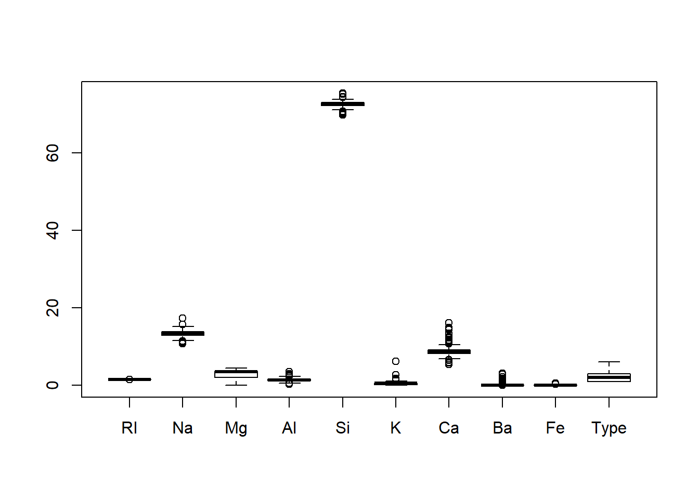
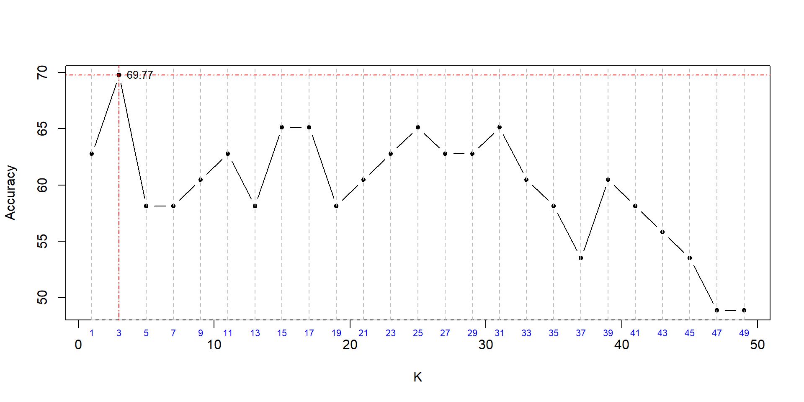

library(class)
library(tidyverse)
glass <- read.csv("C:/Users/Alex/Downloads/Data/glass.csv")
head(glass, n=10)glimpse(glass) # 214 Observations and 10 variables## Observations: 214
## Variables: 10
## $ RI <dbl> 1.52101, 1.51761, 1.51618, 1.51766, 1.51742, 1.51596, 1.51743, 1…
## $ Na <dbl> 13.64, 13.89, 13.53, 13.21, 13.27, 12.79, 13.30, 13.15, 14.04, 1…
## $ Mg <dbl> 4.49, 3.60, 3.55, 3.69, 3.62, 3.61, 3.60, 3.61, 3.58, 3.60, 3.46…
## $ Al <dbl> 1.10, 1.36, 1.54, 1.29, 1.24, 1.62, 1.14, 1.05, 1.37, 1.36, 1.56…
## $ Si <dbl> 71.78, 72.73, 72.99, 72.61, 73.08, 72.97, 73.09, 73.24, 72.08, 7…
## $ K <dbl> 0.06, 0.48, 0.39, 0.57, 0.55, 0.64, 0.58, 0.57, 0.56, 0.57, 0.67…
## $ Ca <dbl> 8.75, 7.83, 7.78, 8.22, 8.07, 8.07, 8.17, 8.24, 8.30, 8.40, 8.09…
## $ Ba <dbl> 0, 0, 0, 0, 0, 0, 0, 0, 0, 0, 0, 0, 0, 0, 0, 0, 0, 0, 0, 0, 0, 0…
## $ Fe <dbl> 0.00, 0.00, 0.00, 0.00, 0.00, 0.26, 0.00, 0.00, 0.00, 0.11, 0.24…
## $ Type <int> 1, 1, 1, 1, 1, 1, 1, 1, 1, 1, 1, 1, 1, 1, 1, 1, 1, 1, 1, 1, 1, 1…# We can use str function as well
str(glass) # We are interested in the Type variable## 'data.frame': 214 obs. of 10 variables:
## $ RI : num 1.52 1.52 1.52 1.52 1.52 ...
## $ Na : num 13.6 13.9 13.5 13.2 13.3 ...
## $ Mg : num 4.49 3.6 3.55 3.69 3.62 3.61 3.6 3.61 3.58 3.6 ...
## $ Al : num 1.1 1.36 1.54 1.29 1.24 1.62 1.14 1.05 1.37 1.36 ...
## $ Si : num 71.8 72.7 73 72.6 73.1 ...
## $ K : num 0.06 0.48 0.39 0.57 0.55 0.64 0.58 0.57 0.56 0.57 ...
## $ Ca : num 8.75 7.83 7.78 8.22 8.07 8.07 8.17 8.24 8.3 8.4 ...
## $ Ba : num 0 0 0 0 0 0 0 0 0 0 ...
## $ Fe : num 0 0 0 0 0 0.26 0 0 0 0.11 ...
## $ Type: int 1 1 1 1 1 1 1 1 1 1 ...# It is not a factor so we need to convert it into one
glass$Type <- factor(glass$Type)
table(glass$Type) # number of observations for each glass type##
## 1 2 3 5 6 7
## 70 76 17 13 9 29barplot(table(glass$Type)) # barplot of the above
head(glass,10) tail(glass,10)# It seems the obervations are placed in an ordered fashion of the Type of glass
summary(glass) # summary## RI Na Mg Al
## Min. :1.511 Min. :10.73 Min. :0.000 Min. :0.290
## 1st Qu.:1.517 1st Qu.:12.91 1st Qu.:2.115 1st Qu.:1.190
## Median :1.518 Median :13.30 Median :3.480 Median :1.360
## Mean :1.518 Mean :13.41 Mean :2.685 Mean :1.445
## 3rd Qu.:1.519 3rd Qu.:13.82 3rd Qu.:3.600 3rd Qu.:1.630
## Max. :1.534 Max. :17.38 Max. :4.490 Max. :3.500
## Si K Ca Ba
## Min. :69.81 Min. :0.0000 Min. : 5.430 Min. :0.000
## 1st Qu.:72.28 1st Qu.:0.1225 1st Qu.: 8.240 1st Qu.:0.000
## Median :72.79 Median :0.5550 Median : 8.600 Median :0.000
## Mean :72.65 Mean :0.4971 Mean : 8.957 Mean :0.175
## 3rd Qu.:73.09 3rd Qu.:0.6100 3rd Qu.: 9.172 3rd Qu.:0.000
## Max. :75.41 Max. :6.2100 Max. :16.190 Max. :3.150
## Fe Type
## Min. :0.00000 1:70
## 1st Qu.:0.00000 2:76
## Median :0.00000 3:17
## Mean :0.05701 5:13
## 3rd Qu.:0.10000 6: 9
## Max. :0.51000 7:29boxplot(glass) # there are outliers, but considering some glass types with few observations - we can avoid trying to remove outliers for now
Looking at the boxplot, we can see that apart from outliers the scale also varies for each variables.
We need to normalise it. For this we’ll create function to normalise the data to same scale.
normalise <- function(x){
return ((x - min(x)) / (max(x) - min(x)))
}
normalise(c(10,20,30,40,50)) # testing to seee if the function works## [1] 0.00 0.25 0.50 0.75 1.00# function works
glass.norm <- as.data.frame(lapply(glass[1:9], normalise)) # normalising data and saving the new data as glass.norm
glass.norm$Type <- glass$Type
glimpse(glass.norm)## Observations: 214
## Variables: 10
## $ RI <dbl> 0.4328358, 0.2835821, 0.2208077, 0.2857770, 0.2752414, 0.2111501…
## $ Na <dbl> 0.4375940, 0.4751880, 0.4210526, 0.3729323, 0.3819549, 0.3097744…
## $ Mg <dbl> 1.0000000, 0.8017817, 0.7906459, 0.8218263, 0.8062361, 0.8040089…
## $ Al <dbl> 0.2523364, 0.3333333, 0.3894081, 0.3115265, 0.2959502, 0.4143302…
## $ Si <dbl> 0.3517857, 0.5214286, 0.5678571, 0.5000000, 0.5839286, 0.5642857…
## $ K <dbl> 0.009661836, 0.077294686, 0.062801932, 0.091787440, 0.088566828,…
## $ Ca <dbl> 0.3085502, 0.2230483, 0.2184015, 0.2592937, 0.2453532, 0.2453532…
## $ Ba <dbl> 0, 0, 0, 0, 0, 0, 0, 0, 0, 0, 0, 0, 0, 0, 0, 0, 0, 0, 0, 0, 0, 0…
## $ Fe <dbl> 0.0000000, 0.0000000, 0.0000000, 0.0000000, 0.0000000, 0.5098039…
## $ Type <fct> 1, 1, 1, 1, 1, 1, 1, 1, 1, 1, 1, 1, 1, 1, 1, 1, 1, 1, 1, 1, 1, 1…Splitting data glass.norm into train_set & test_set with labels train_set_labels & test_set_labels respectively.
We’ll be using random sampling and splitting the data we have into 80% training dataset & 20% test dataset based on each glass Type.
library(caTools)
set.seed(123)
split = sample.split(glass.norm$Type, SplitRatio = 0.80)
train_set = subset(glass.norm[-10], split == TRUE) # train dataset
test_set = subset(glass.norm[-10], split == FALSE) # test dataset
train_set_labels = subset(glass.norm$Type, split == TRUE) # labels for train dataset
test_set_labels = subset(glass.norm$Type, split == FALSE) # labels for test dataset
table(train_set_labels) # count of each glass type in training dataset## train_set_labels
## 1 2 3 5 6 7
## 56 61 14 10 7 23table(test_set_labels) # count of each glass type in test dataset## test_set_labels
## 1 2 3 5 6 7
## 14 15 3 3 2 6Now we’ll use knn function
glass_pred <- knn(train = train_set,
test = test_set,
cl = train_set_labels,
k=1)cm <- table(test_set_labels, glass_pred, dnn = c("Actual", "Predicted"))
cm # we see some misclassifications## Predicted
## Actual 1 2 3 5 6 7
## 1 11 2 1 0 0 0
## 2 3 8 2 2 0 0
## 3 1 2 0 0 0 0
## 5 0 0 0 3 0 0
## 6 0 0 0 0 1 1
## 7 0 1 0 1 0 4library(caret)
confusionMatrix(cm)## Confusion Matrix and Statistics
##
## Predicted
## Actual 1 2 3 5 6 7
## 1 11 2 1 0 0 0
## 2 3 8 2 2 0 0
## 3 1 2 0 0 0 0
## 5 0 0 0 3 0 0
## 6 0 0 0 0 1 1
## 7 0 1 0 1 0 4
##
## Overall Statistics
##
## Accuracy : 0.6279
## 95% CI : (0.4673, 0.7702)
## No Information Rate : 0.3488
## P-Value [Acc > NIR] : 0.0001758
##
## Kappa : 0.5032
##
## Mcnemar's Test P-Value : NA
##
## Statistics by Class:
##
## Class: 1 Class: 2 Class: 3 Class: 5 Class: 6 Class: 7
## Sensitivity 0.7333 0.6154 0.00000 0.50000 1.00000 0.80000
## Specificity 0.8929 0.7667 0.92500 1.00000 0.97619 0.94737
## Pos Pred Value 0.7857 0.5333 0.00000 1.00000 0.50000 0.66667
## Neg Pred Value 0.8621 0.8214 0.92500 0.92500 1.00000 0.97297
## Prevalence 0.3488 0.3023 0.06977 0.13953 0.02326 0.11628
## Detection Rate 0.2558 0.1860 0.00000 0.06977 0.02326 0.09302
## Detection Prevalence 0.3256 0.3488 0.06977 0.06977 0.04651 0.13953
## Balanced Accuracy 0.8131 0.6910 0.46250 0.75000 0.98810 0.87368Model accuracy for k=1 is 62.79%
We need to find the best k value that gives better accuracy.
k_acc <- c()
for(i in seq(1,50,2)){
set.seed(789)
t_model <- knn(train = train_set,
test = test_set,
cl = train_set_labels,
k=i)
t_cm <- table(test_set_labels, t_model)
t_acc <- sum(diag(t_cm)) / sum(t_cm)
print(paste(i, round(t_acc, digits = 4)*100, sep = " - "))
k_acc <- c(k_acc, round(t_acc, digits = 4)*100 )
}## [1] "1 - 62.79"
## [1] "3 - 69.77"
## [1] "5 - 58.14"
## [1] "7 - 58.14"
## [1] "9 - 60.47"
## [1] "11 - 62.79"
## [1] "13 - 58.14"
## [1] "15 - 65.12"
## [1] "17 - 65.12"
## [1] "19 - 58.14"
## [1] "21 - 60.47"
## [1] "23 - 62.79"
## [1] "25 - 65.12"
## [1] "27 - 62.79"
## [1] "29 - 62.79"
## [1] "31 - 65.12"
## [1] "33 - 60.47"
## [1] "35 - 58.14"
## [1] "37 - 53.49"
## [1] "39 - 60.47"
## [1] "41 - 58.14"
## [1] "43 - 55.81"
## [1] "45 - 53.49"
## [1] "47 - 48.84"
## [1] "49 - 48.84"k_acc.df <- data.frame(seq(1,50,2),k_acc)
colnames(k_acc.df) <- c("K", "Accuracy")
k_acc.df
As seen from the plot we can see that when k=3 we get an Accuracy of 69.77%
We should create a KNN model with k=3 for better performance